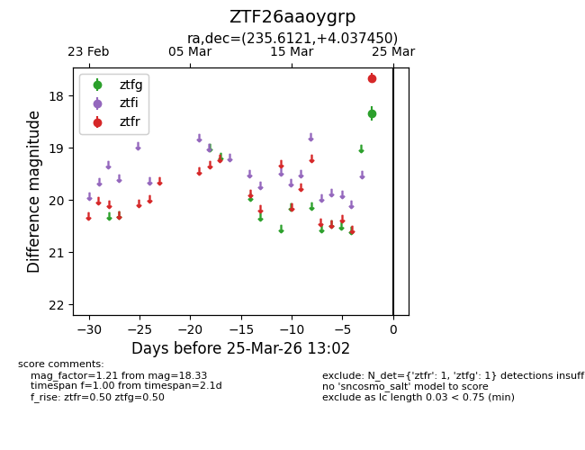
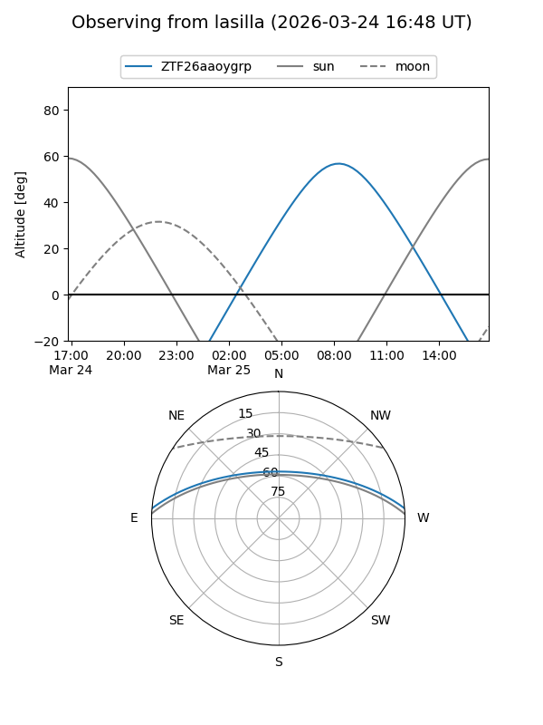
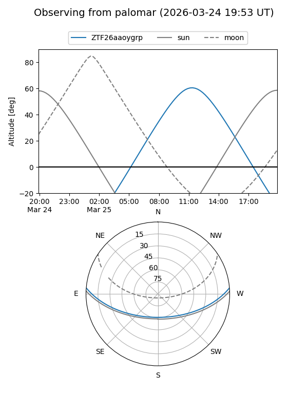

ZTF26aaoygrp
Target ZTF26aaoygrp at 2026-03-25 13:04
Aliases and brokers:
FINK: link
Lasair: link
ALeRCE: link
alt names
ZTF26aaoygrp (ztf,fink_ztf)
Coordinates:
equatorial (ra, dec) = 235.6121,+4.03745
equatorial (HMS+DMS) = 15:42:26.91,+04:02:14.82
galactic (l, b) = (11.0961,+43.15652)
Flags:
Photometry:
last ztfg=18.33, ztfr=17.66
1 ztfg, 1 ztfr detections
Lightcurve

Visibility


Additional plots